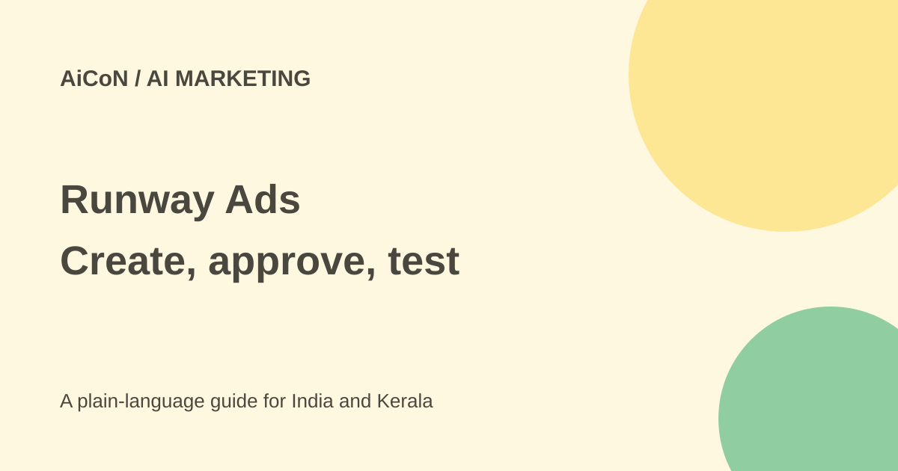

Runway Ads: AI ad creation, publishing and testing
Runway Ads connects ad creation with publishing and performance feedback. It is still described as an enterprise pilot. Do not confuse an early-access request with a free, ready-to-use advertising account.

What does Runway Ads do?
Runway announced Runway Ads on 30 September 2026. A team connects an advertising account and brand kit. The product generates image and video variants, publishes approved versions, reads their performance and creates another batch based on those results. It brings several parts of paid advertising into one workflow.
The official product page names Meta, Google and TikTok as publishing channels. It says assets can be resized for different formats and localised using rules set by the team. Localisation can include voiceover, on-screen text and product screenshots. These are vendor descriptions, not a test of Malayalam output or an assurance that every channel is available to an Indian advertiser.
Human approval and spending controls
Human approval is on by default. Variants pass through an automated brand check before reaching an approval queue. Teams can later choose automatic publishing by campaign or variant type. Keeping approval on is a sensible starting point when ads carry prices, health claims, customer promises or a new audience.
Runway describes budget rules such as a maximum daily change, a minimum share for new audiences and retargeting caps. Those controls do not make advertising free. Review both the product settings and the actual ad platform's spend, permissions and billing. An attractive AI-generated ad can still waste money or make an incorrect claim.
Is it free? Can anyone start?
The current page says Runway is piloting with select enterprise partners ahead of a wider rollout. Its form requests information about an advertiser's paid programme, followed by contact from enterprise sales. The pages checked do not publish a price for Runway Ads, a universal free plan, a firm wider-release date or an India launch date.
Request a written quote covering product fees, generated-asset limits, support and the separate advertising budget. Do not substitute prices from Runway's other video-generation plans. If a quote is in US dollars, compare an approximate INR value at the time of payment and account for taxes and payment charges.
How to evaluate it before connecting accounts
- Read the official product page and announcement. Confirm that access is available for your company, country and desired advertising channels.
- Prepare approved logos, product images, prices and brand rules. Use only assets you have rights to use.
- Ask sales about fees, minimum spend, account permissions, data retention, cancellation and asset ownership.
- Check whether your channel, language and target country are supported. Ask for samples containing real Malayalam text if that matters.
- If accepted, start with a limited pilot budget and human approval on. Check every price, translation and product claim before publication.
- Compare sales or another meaningful outcome against your current workflow. More variants alone do not show better results.
- Review who can enable automatic publishing or change spending limits. Keep a record of approved ads and budget settings.
For India and Kerala
A local retailer or agency could be interested in faster product variants, but the current enterprise pilot may not suit a small budget. Vendor-listed channel integration is not proof of access in India. Local language quality, audience fit, platform rules and commercial terms need checking before commitment.
For Malayalam advertisements, verify spellings, prices, dates, product availability and cultural meaning with a fluent person. Do not give an AI tool customer lists or confidential client information until the business has approved that disclosure and the service terms. Keep each client's assets and permissions separate.
How strong are the performance claims?
Runway reports that its own weekly ad volume rose from 77 to roughly 900, return on ad spend doubled, conversion rose roughly 34%, and cost per subscriber fell 41%. These are Runway's internal results since July. They are not independent measurements, a controlled comparison or promised results for your shop.
What changed since the original post?
The 1 October post described an early-access product with no announced price. The current official pages still describe a select-enterprise pilot. This guide adds questions about India access, permissions, separate ad spending and local-language checks rather than turning the launch announcement into a general availability claim.
Frequently asked questions
Is this Runway's normal video editor?
No. Runway Ads is presented as a product for paid advertising workflows.
Can ads go live without review?
Human approval is the default, but automatic publishing can be enabled. Check the account settings.
Does it guarantee cheaper customers?
No. Runway's own results do not guarantee your campaign outcomes.
Was an ad account connected for this guide?
No. This is a documentation-based guide, not a campaign test.
Sources: Official product page · 30 September announcement. Checked 7 October 2026.